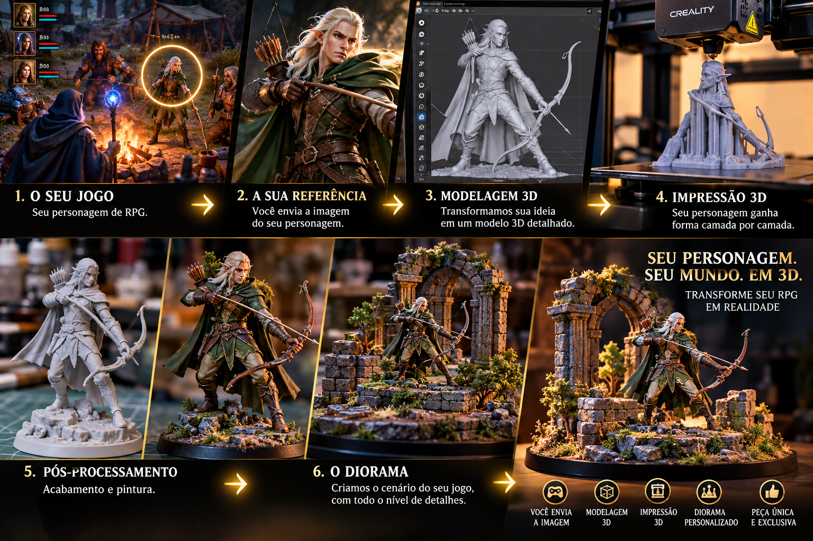
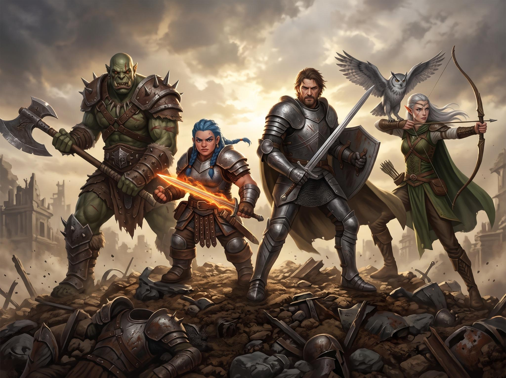
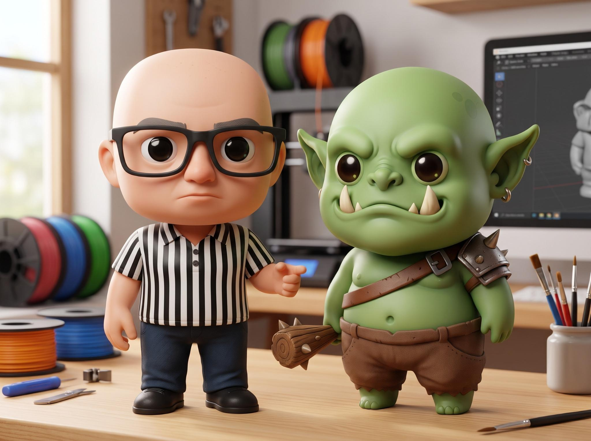

PERSONAGENS · RPG · MINIATURAS · CHIBI
Seu personagem.
Sua história. Em 3D.
Do universo dos jogos à sua estante: transformamos personagens, ideias e referências em peças físicas personalizadas, com modelagem, impressão e acabamento cuidadoso.
DA IMAGINAÇÃO PARA A REALIDADE
Veja o que podemos criar juntos
Você pode enviar uma imagem do seu personagem, uma referência ou até uma foto sua. A partir dela, desenvolvemos uma proposta de miniatura 3D, que pode ser finalizada como personagem, peça de coleção ou diorama.

01 · CRIAÇÃO
Do RPG ao diorama
Uma ideia ganha forma em cada etapa: referência, modelagem 3D, impressão, pós-processamento, pintura e, quando desejado, um cenário personalizado.

02 · DO JOGO PARA A IMPRESSÃO
Seu personagem sai da tela
Seu avatar ou personagem pode se transformar em uma miniatura física. Envie imagens de referência e vamos avaliar as possibilidades de modelagem e impressão.

03 · VOCÊ TAMBÉM PODE SER UM CHIBI
Eu e meu Orc
Este é um exemplo de como uma pessoa e seu personagem podem ganhar versões Chibi. O resultado pode representar você, alguém especial ou seu personagem favorito.
UMA MINIATURA COM A SUA CARA
Mande sua foto.
Nós transformamos em Chibi!
Você também pode nos enviar uma foto sua, de um familiar, de um amigo ou do seu personagem. Criamos uma proposta de boneco Chibi personalizado para impressão 3D. Cada projeto é avaliado conforme os detalhes, tamanho e acabamento desejados.